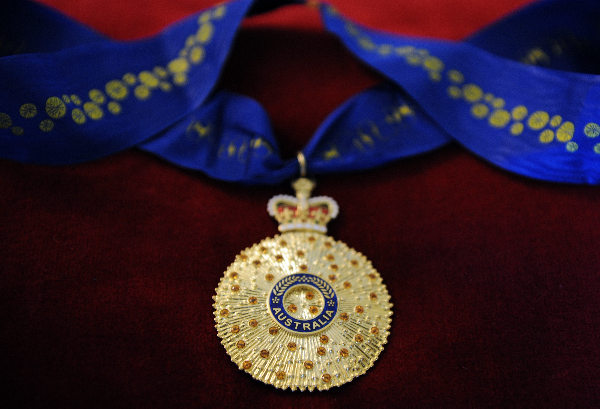

Verily this is a very nice looking AC. Made of gold I believe and sitting on maroon velvet. It's got wattle on the ribbon, is inlaid with semi-precious stones with the crown sitting at the top. Lucky we got rid of calling people Sir so and so and brought in something much more sensible. Lapel pins that people can wear in business class departure lounges.The column below generated more engagement than any column I've written before – in Australia at least. Thanks to Peter Martin for chasing me up on writing the piece and suggesting major improvements to it. The research was done months ago and it was quite likely I'd have forgotten to wheel it out for this year's Australia Day which was the obvious day to publish.
It was published in The Conversation and Peter got the Age, the SMH and the ABC website to run it all with Conversation credits. At the time of sending this out it had garnered over 150 comments on the Conversation almost all supportive and was being picked up on various other sites.
We’re awarding the Order of Australia to the wrong people
More than 800 of us are in line for an Order of Australia on Australia Day.
Sadly, as Lateral Economics research reveals, many will get it for little more than doing their job. And the higher the job’s status, the higher the award.
Governors General, High Court Justices and Vice Chancellors of major universities would hope for the highest Companion of the Order (AC). Professors, public service departmental heads, senior business people should hope for the next one down – an Officer of the Order (AO). School Principals would generally slot in next for Members of the Order (AM).
If you’re lucky, or you’ve done your job extraordinarily well, you’ll be promoted one rank, but that’s pretty much it.
We reward most the already rewarded
Meanwhile, those who succeed in some achievement principally in and for their community usually qualify for the lowest award if that; the Medal of the Order (OAM). And usually only if they’ve become conspicuous.
The level of gratitude amongst recipients seems to follow an equal and opposite arc. Those at the bottom seem the most thrilled for being recognised the least.
Distinction in putting others first gets short shrift. As Anne Summers lamented in 2013:
Seven years ago I nominated a woman I admire for an Australian honour. It took two years but it came through and she was awarded a Medal of the Order of Australia (OAM) for a lifetime of work with victims of domestic violence. I was disappointed she had not been given a higher award - I had hoped for an AM (Member of the Order of Australia) at the very least - but she was thrilled and so was her family.
Money, fame and status are nothing to be sneezed at if they are honestly earned. But they are their own reward. Why should they beget other rewards?
We could be putting awards to use
Here’s an idea. Why don’t we award honours to encourage people to do more than their job? In a world which is lavishing increasing rewards on the ‘haves’, the worldly rewards for ‘getting on’ need little bolstering.
Knowing that awards are reserved for people who do more than their jobs might encourage us to choose more selfless and socially committed lives at the outset of our careers.
There’s a hunger among the young to do just that – to combine good, privately rewarding careers with serving their community and tackling social ills.
If honours are “the principal means by which the nation officially recognises the merit of its citizens” as the 2011 Government House review put it, I’d like to use it to encourage those people the most.
Wouldn’t it be more consistent with Australian values?
It’d make them more Australian
Government House provides online biographies of all those awarded honours. Lateral Economics sampled around half of them back to 2013 looking specifically at the gender division of honours and the extent to which those biographies included descriptions of work done without personal gain.
Barely more than a quarter of Order of Australia recipients recorded voluntary work in their biographies.
And those that did were more likely to be near the bottom of the awards ladder.
Over a third of those receiving the very bottom award, the OAM, were engaged in obviously selfless work, compared with a fifth at the top with just two out of ten ACs.
Still we may be making a little progress. Perhaps spurred by sentiments such as those expressed by Anne Summers, last year saw a higher percentage of women than in any previous year. Unusually, six women got the top honour, the AC, compared with four men, and the proportion with voluntary service broke through the 30 percent barrier for the first time.
I wonder what Australia Day will bring. I’m thinking that whatever it is, we can do a lot better, for our community, and our country.
Postscript: one of the interviews of the article.
Sadly Nick that is the way it has always been and will always be.
Fancy giving an 'honour' to a person who has selflessly given thousands of hours of voluntary work to help the community
In an account in Ayers' biography of Mawson, A.P. Rowe, the vice-chancellor of the University of Adelaide complained to Playford that it was wrong that Mark Mitchell, a deputy vice-chancellor should be given a knighthood and not he. Playford's reason was that in addition to his academic job, Mitchell had a long period of good works to his credit (he was the president of the South Australian Council of Social Services), whereas Rowe had confined his work to the role of Vice-chancellor. The principle here is that one of the roles of government is to encourage those who work to alleviate human misery. This goes against the economic principle of productivity, which implies that the more desperate people are, the less reward they will work for, and the higher will be their productivity.
the honours system is indeed a very visible sign that the elites thumb their nose at the rest. Maybe that is why you get so much traction on this: you are showing those who always defer to authority what their masters actually think of them.
+1 (this blog needs a thumbs up sign)